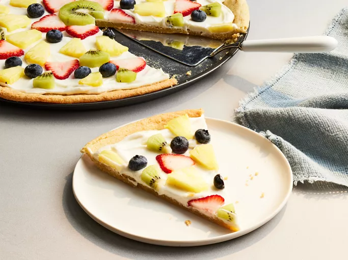

Ingredients
- 1 1/4 cups all-purpose flour
- 1 teaspoon cream of tartar
- 1/2 teaspoon baking soda
- 1/4 teaspoon salt
- 1/2 cup butter, softened
- 1 1/4 cups white sugar
- 1 large egg
- 8 ounces cream cheese
- 2 teaspoons vanilla extract
- 1/2 cup blueberries
- 1/2 cup strawberries
- 1/2 cup bananna
Directions
- Preheat oven to 350 degrees.
- To make the pizza "dough" or the cookie crust for the pizza combine the flour, cream of tartar, baking soda, and salt in a bowl and set aside. Cream the butter and 3/4 cupsugar until smooth and add the egg and dry ingredients until just blended.
- Press dough into a pizza pan(or pan of your choice).
- For the filling, beat the cream cheese with the remaining 1/2 cup sugar and vanilla until the mixture is light and fluffy.
- After spreading on the filling, you can add arrange the fruits onto the top of your pizza.
Homepage